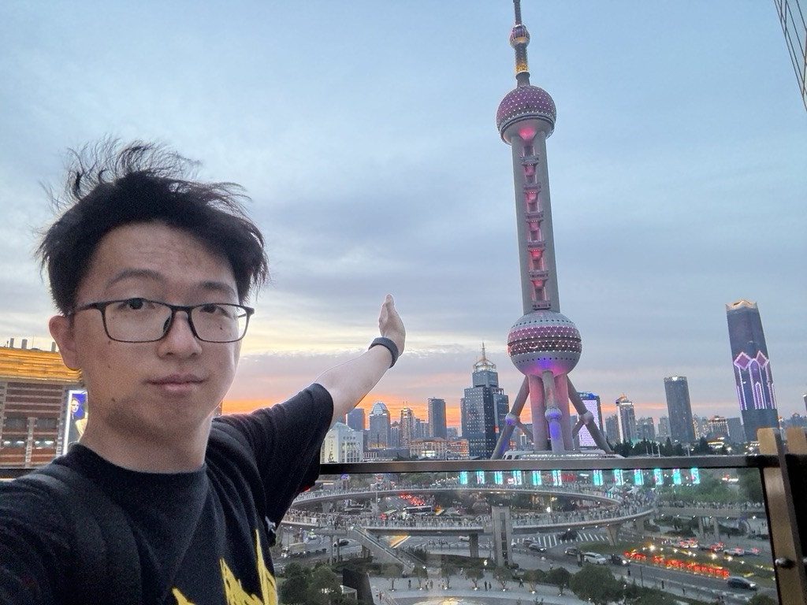

|  | Yifan ShiPh.D. Student |
I am currently a first-year Ph.D. student at the Department of Computer Science and Engineering, The Chinese University of Hong Kong, supervised by Prof. Bei Yu since Fall 2024. Prior to that, I obtained my B.S. degree at the School of Information from Renmin University of China (RUC), class of 2024.
Electronic Design Automation (EDA)
Computer Organization and Architecture
Large Language Models (LLM)
I'm working hard on my debut!
| Postgraduate Scholarship | The Chinese University of Hong Kong | 2024 |
| National Scholarship for Undergraduates | Education Ministry of PRC | 2022 |
Institute of Electronic Design Automation, Peking University
Research Intern, EDA Backend Group
Supervised by Prof. Yibo Lin and Dr. Zuodong Zhang
July 2024 - August 2024, Wuxi, Jiangsu Province
Topic: IR-Drop Optimization
Programming Languages: C/C++, Python, Java, SQL, Verilog/SystemVerilog
Languages: Mandarin (native speaker), English (fluent), Cantonese (beginner)
Tools: LaTeX, Wolfram Mathematica, PyTorch, CUDA
Hobbies: Clarinet, Travelling, Table Tennis, Photography, and so much more